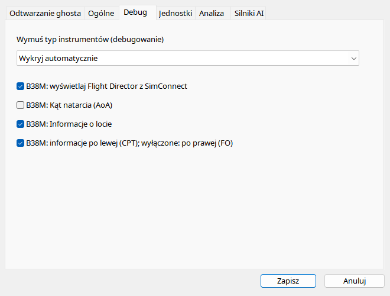

Pozostaw Automatycznie do zwyk³ej analizy: aplikacja wybierze uk³ad wed³ug ICAO i danych nagrania. Override s³u¿y porównaniu rendererów, a nie zmianie samolotu. Mo¿esz prze³¹czyæ ten sam lot miêdzy six-pack, generic PFD, B38M i A320, ale brakuj¹ce SDK pozostan¹ brakuj¹ce. Opcje B38M steruj¹ widocznoœci¹ informacji o locie, stron¹ CPT/FO, AoA i FD. Wy³¹czenie FD jest przydatne, jeœli dany dodatek nie zasila standardowych komend prowadzenia mimo w³¹czonego prze³¹cznika FD.
| Opcja / czynnoœæ | Dzia³anie i ograniczenia |
|---|---|
| Automatyczny | Wybiera ramkê z nagrania. Override nie tworzy SDK innego samolotu. |
| Rodzaj | GA analog, GA glass, klasyczny airliner, generic PFD, B38M PFD/EICAS lub A320 PFD/ECAM. Metadane lotu zostaj¹ bez zmian. |
| Panel informacji | Numer lotu, squawk, rejestracja, SELCAL i czas; domyœlnie w³¹czony. |
| Strona | Zaznaczone = lewa/CPT, odznaczone = prawa/FO, niezale¿nie od widocznoœci panelu. |
| AoA | Domyœlnie wy³¹czone, wymaga wa¿nego incidence i respektuje ground inhibit. |
| Flight Director | Domyœlnie w³¹czony; zapisane komendy standardowe SimConnect. Wy³¹cz, gdy dodatek nie dostarcza sensownych danych. |
